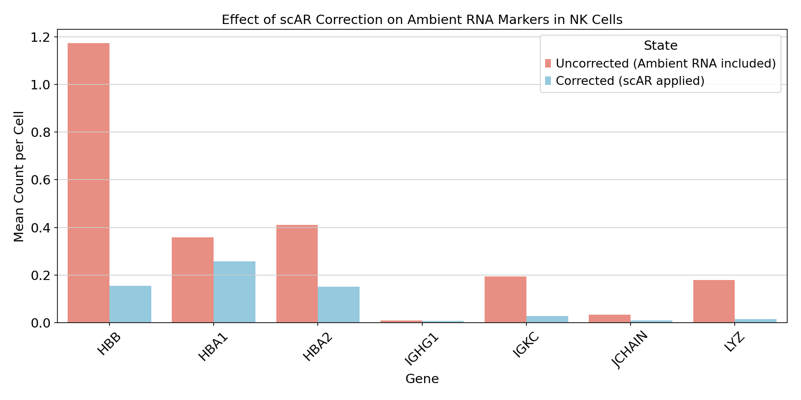
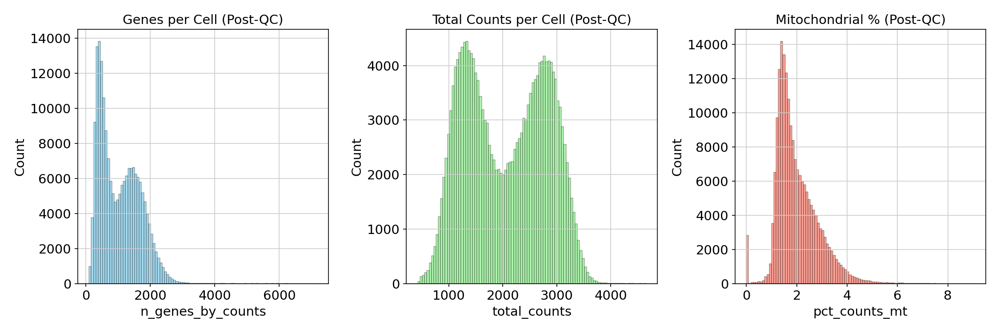
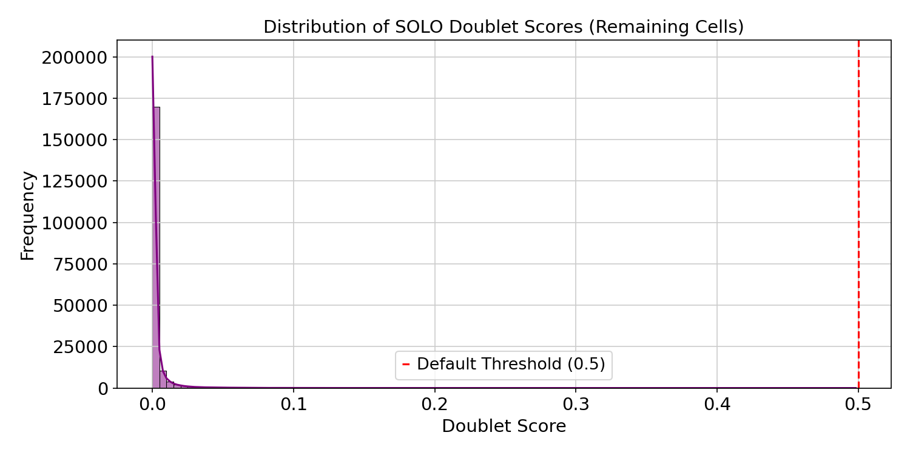
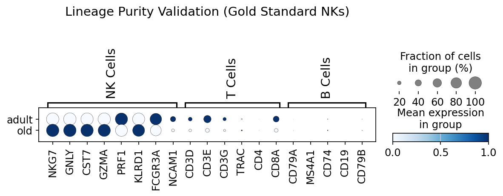
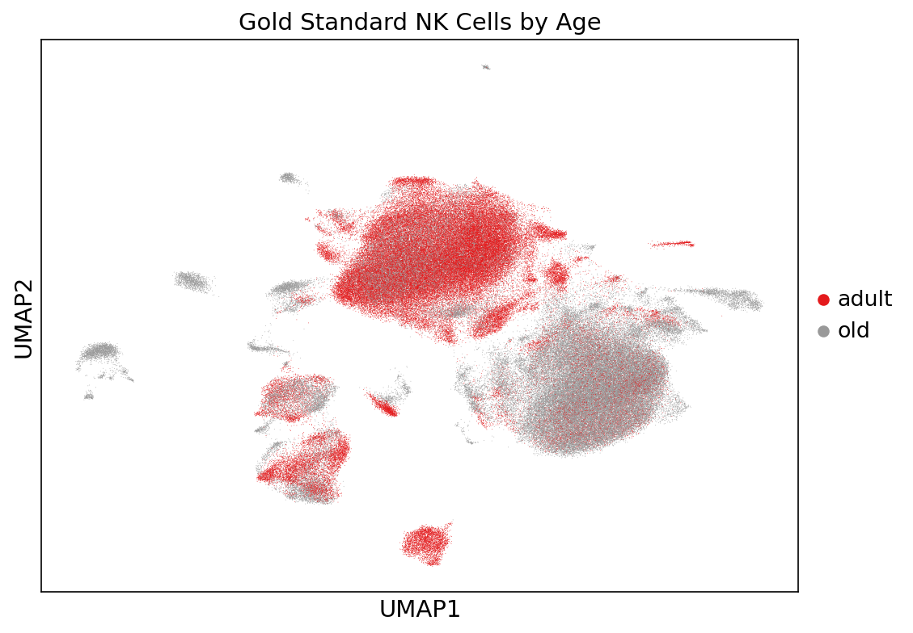

Este reporte valida la integridad del conjunto de datos V4-Clean para el estudio de inmunosenescencia en células NK. El dataset ha sido procesado mediante una tubería de alta fidelidad que incluye remoción de RNA ambiental (scAR), control de calidad adaptativo (DDQC) y eliminación de dobletes (SOLO).

Figura 1: Comparativa de expresión (Mean Counts) antes y después de la corrección por scAR.

Figura 2: Distribución de n_genes, total_counts y porcentaje mitocondrial post-filtrado.

Figura 3: Histograma de probabilidad de dobletes calculada por el modelo SOLO.

Figura 4: Expresión de marcadores canónicos para validación de tipo celular.

Figura 5: Proyección UMAP coloreada por grupo de edad (Adult vs Old).